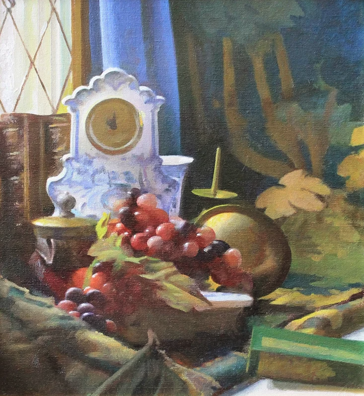

Mastery Document - Become Paul by February 1, 2025

- Framework
- Mastery of Seeing
- Color
- Drawing
- Memory
- Visual Order
- Design
- Mastery of Method
- Mastery of Problem Solving
- Evidence of Mastery
- Work & Demos for study
- Books
- Mechanics of the Eye
- Axioms
- Unorganized Things
- Music
A map is not the territory it represents, but, if correct, it has a similar structure to the territory, which accounts for its usefulness. - Alfred Korzybski
Framework
Comprehensible Input Hypothesis
Color, Drawing (Proportions), Memory
- Copying
- Still life setup
- Memory painting
- ...
Conceptual Study
Visual Order, Design
- Knowledge organization
- Copying
- ...
Proof & Geoposition
Method, Visual Order, Design
- Working directly from nature
- Still life setup
- ...
Mastery of Seeing
Items in grey are related concepts.
ie, drawing form is impossible without first seeing form. ie, hand ability shortly follows eye ability. Krashen: acquisition begets speaking. Gammell: Seeing is seeing relationally.
Color


Munsell determined the spacing of colors along these dimensions by taking measurements of human visual responses. In each dimension, Munsell colors are as close to perceptually uniform as he could make them, which makes the resulting shape quite irregular. As Munsell explains:
Desire to fit a chosen contour, such as the pyramid, cone, cylinder or cube, coupled with a lack of proper tests, has led to many distorted statements of color relations, and it becomes evident, when physical measurement of pigment values and chromas is studied, that no regular contour will serve. — Albert H. Munsell, “A Pigment Color System and Notation”
Chroma, measured radially from the center of each slice, represents the “purity” of a color (related to saturation), with lower chroma being less pure (more washed out, as in pastels).[6] Note that there is no intrinsic upper limit to chroma. Different areas of the color space have different maximal chroma coordinates. For instance light yellow colors have considerably more potential chroma than light purples, due to the nature of the eye and the physics of color stimuli. This led to a wide range of possible chroma levels—up to the high 30s for some hue–value combinations (though it is difficult or impossible to make physical objects in colors of such high chromas, and they cannot be reproduced on current computer displays). Vivid solid colors are in the range of approximately 8.
Blue
When sunlight passes through the atmosphere, the blue wavelengths are scattered more widely by the oxygen and nitrogen molecules, and more blue comes to our eyes. This effect is called Rayleigh scattering, after Lord Rayleigh and confirmed by Albert Einstein in 1911.
Red
As a ray of white sunlight travels through the atmosphere to the eye, some of the colors are scattered out of the beam by air molecules and airborne particles due to Rayleigh scattering, changing the final color of the beam that is seen. Colors with a shorter wavelength, such as blue and green, scatter more strongly, and are removed from the light that finally reaches the eye.[16] At sunrise and sunset, when the path of the sunlight through the atmosphere to the eye is longest, the blue and green components are removed almost completely, leaving the longer wavelength orange and red light. The remaining reddened sunlight can also be scattered by cloud droplets and other relatively large particles, which give the sky above the horizon its red glow.
Yellow
In late summer, as daylight hours shorten and temperatures cool, the veins that carry fluids into and out of the leaf are gradually closed off. The water and mineral intake into the leaf is reduced, slowly at first, and then more rapidly. It is during this time that the chlorophyll begins to decrease. As the chlorophyll diminishes, the yellow and red carotenoids become more and more visible.
-
Hue
- Chroma
- Value
- Relational value
- Relational chroma
-
Relational hue
Drawing
Goal with this list is to capture the fundamental *things* of painting and drawing, in the idealized world but also the useful world. Perhaps this requires two lists of identical terms but different definitions. What is it in physical universe, but also what is it in practice of the visual order?
Euclid's Elements
- Definition 1.
A point is that which has no part.
- Definition 2.
A line is breadthless length.
- Definition 3.
The ends of a line are points.
- Definition 4.
A straight line is a line which lies evenly with the points on itself.
- Definition 5.
A surface is that which has length and breadth only.
- Definition 6.
The edges of a surface are lines.
- Definition 7.
A plane surface is a surface which lies evenly with the straight lines on itself.
- Definition 8.
A plane angle is the inclination to one another of two lines in a plane which meet one another and do not lie in a straight line.
- Definition 9.
And when the lines containing the angle are straight, the angle is called rectilinear.
- Definition 10.
When a straight line standing on a straight line makes the adjacent angles equal to one another, each of the equal angles is right, and the straight line standing on the other is called a perpendicular to that on which it stands.
- Definition 11.
An obtuse angle is an angle greater than a right angle.
- Definition 12.
An acute angle is an angle less than a right angle.
- Definition 13.
A boundary is that which is an extremity of anything.
- Definition 14.
A figure is that which is contained by any boundary or boundaries.
- Definition 15.
A circle is a plane figure contained by one line such that all the straight lines falling upon it from one point among those lying within the figure equal one another.
- Definition 16.
And the point is called the center of the circle.
- Definition 17.
A diameter of the circle is any straight line drawn through the center and terminated in both directions by the circumference of the circle, and such a straight line also bisects the circle.
- Definition 18.
A semicircle is the figure contained by the diameter and the circumference cut off by it. And the center of the semicircle is the same as that of the circle.
- Definition 19.
Rectilinear figures are those which are contained by straight lines, trilateral figures being those contained by three, quadrilateral those contained by four, and multilateral those contained by more than four straight lines.
- Definition 20.
Of trilateral figures, an equilateral triangle is that which has its three sides equal, an isosceles triangle that which has two of its sides alone equal, and a scalene triangle that which has its three sides unequal.
- Definition 21.
Further, of trilateral figures, a right-angled triangle is that which has a right angle, an obtuse-angled triangle that which has an obtuse angle, and an acute-angled triangle that which has its three angles acute.
- Definition 22.
Of quadrilateral figures, a square is that which is both equilateral and right-angled; an oblong that which is right-angled but not equilateral; a rhombus that which is equilateral but not right-angled; and a rhomboid that which has its opposite sides and angles equal to one another but is neither equilateral nor right-angled. And let quadrilaterals other than these be called trapezia.
- Definition 23.
Parallel straight lines are straight lines which, being in the same plane and being produced indefinitely in both directions, do not meet one another in either direction.
- Point Arabesque
-
Line
- Angle Passes through a point
- Curve
-
Mass Color movements the property of a body that is a measure of its inertia and that is commonly taken as a measure of the amount of material it contains and causes it to have weight in a gravitational field
-
Shape the external form, contours, or outline of someone or something.
-
Proportion
- Linears
- Plumb
- Angles
- Rectangular width to height
- Ovoid width to height
- Anchors
-
Relational to each other
- Gesture
Memory
- Color
- Form
- Contour
- Motion
- Essentials (plant field study)
- Elapsed time recall
- Multiple memory recall
- Near-peripheral, peripheral memorization
- Joyful memory (See Language Input Hypothesis)
- Simultaneous observation
Visual Order - belongs in between Seeing and Method

- Greater forms, lesser forms Actually meant below.
- Greater to lesser shapes and value units Shouldn't this also include "masses"? Not convinced that shape is accurate requirement - what is a value unit then? Bounded by an effect? Need to define mass and shape better
- General tonality
- Naive eye
- Flatness of values
- Flatness of visual impression
- Major players, minor players
- Lostness
- Big smash of light
- Gesture of the lights and darks
- Classes of things (the lights, midtones, reds, blues, etc)
-
Light effects Needs definition
- Order of effects locally
- Order of effects of the whole
-
Edges
- Sharpness
- Contrast (see Color list)
-
Keying
- by value
- by chroma
- by hue
- Glory note
- The lights are turned on
Design
- Unity, harmony
- Pattern (see Drawing list)
- Rhythm (or timing)
- Equilibrium
- Theme, statement
- Destinations and roads (1 or 3+, not 2)
- Arabesque
- Correlations
- Busy, non-busy
- Grouping
-
Color Play
-
Distribution of Effects
- Recurrence and differentiation
- Featuring
-
Color Scheme
- The Reds, The Blues, The Yellows, The Lights, The Darks
-
Center of interest (crescendo)
-
Main line
Invention
(this list is really inadequate)
- Plausability
- Human proportion
- Anatomy
- Environment
- Perspective
Mastery of Method
The skills that are a result of discipline and repetition. Muscle memory. Practices that can be acquired immediately upon learning of it.
- Always viewing from the same location
- Drawing with one edge of the tool
- Avoiding glare (stroke angle, viewing angle)
- Drawing a sharp edge in one stroke
- Organizing the palette
- Drawing with a feel for the sharp edge of the charcoal
- Color matching
- Setting up life-size, locating the picture plane
- Painting broken color
- Removing paint with a brush
- Using a viewfinder
- Maintaining flat shadows
- Maintaining flat masses (uniformity)
- Spotting and distributing
- Keeping a clean eraser
- Turning form, starting from the lightest light into the dark
- Adjusting a light effect efficiently
- Erasing without dragging charcoal
- Sharpening and blurring an existing line
- Drawing texture
- Jumping to the final values
- Stumping up to a hard edge
- Drawing straight lines in succession
- All over the place at once in the start Worth pointing out all things that only apply to the start
- Advancing all of the drawing together (unity)
- Stumping flat shadows
- Returning to a prior state
- Conveying big form ideas before articulating edges
- Floating the arabesque
- Application: Scumble
- Application: Tickling
- Application: Cutting an edge
- Application: Weaving
- 3 Skins
- Working from unified state toward another unified state of the image Unity needs a definition (or re-wording), this has always been a frustratingly vague term. Initial definition for *working* unity - bringing up all the parts of the image together so that no one part is too far ahead or too far behind the other parts. Then there is also unity in design, method, finish.
- Subdivisions
- Drawing control with the shoulder and elbow
- Floating line through a point with specificity
- Feathering the start and end of a floating line
- Feathering non-edges of masses
- Directional lines & keeping chaos away
- Confirming adequate proportions by measurement
- Proving proportions by many witnesses
- conveying the greater abstraction with least amount of local drawing in the start
- only indicating useful edges
- Debriefing
- Looking 4 times before making a mark
- Simultaneous focus
- Popping eyes for color
- Looking with peripheral vision
- Tying on effects
- Paint/draw from effect to effect When?
- Only indicate one edge of an object When?
-
Surface Integrity
- Just enough paint to get the job done
- Using up the paint
- Drawing on the tooth (paper)
- Wet-into-wet joint
- Wet-into-dry joint
- Filling the interstices
- Preservation of lights
- Avoiding paint ridges
- Removing paint ridges
- Flowing paint (oil to pigment ratio)
- Always dark into light
Mastery of Problem Solving
- Naming the pig
- Simple binary questions
- Blurred eye
- Backstraggler
- Comparing to the whole
- Systems, families, classes
- Sets of 3
- Ovoids
- Subdivisions
- Box proportions
- Triangle proportions
- Linear measure with a ruler
- Box measure with a ruler (three side measure)
- The size of the implied circle when judging a curve
- Body feel: How a shape feels in hand / Could I climb this angle?
- Plumb to vertical
- Camera focus: finding the min-max location
- Big and easy: Looking bigger when in trouble
- Straight line deviation (S-curves, small hump and large hump)
- 2 things are always correct to each other, 3 things makes it relational
- Looking for missing pigs: If you look for ___ you'll find it. (Fullness, for example)
Evidence of Mastery
Not sure how to think about this list. These are values I think worth considering, but they seem to be the result of mastery rather than a skill in themselves. What is Beauty?
- Appearance of ease
- The painter disappears
- Mood
- Atmosphere
- Poetry, music
Work & Demos for study
...
Books
- twilight of painting
- velasq ram stev
- suzuki method
- painting stevens
- john sargent book
- inges walter pach
- millet cartwright
- jan vermeer delft
- bunker gammell
- classic pov cox
- discourses
- art of clear thinking
- Principles and Practice in Second Language Acquisition
- benson's notes
- ...
Mechanics of the Eye


- Wiki on Fovea centralis
- Wiki on Periperal vision
- Wiki on Averted vision
- Wiki on Purkinje effect
- Wiki on CIE 1931 color space
Due to the distribution of cones in the eye, the tristimulus values depend on the observer's field of view. To eliminate this variable, the CIE defined a color-mapping function called the standard (colorimetric) observer, to represent an average human's chromatic response within a 2° arc inside the fovea. This angle was chosen owing to the belief that the color-sensitive cones resided within a 2° arc of the fovea. Thus the CIE 1931 Standard Observer function is also known as the CIE 1931 2° Standard Observer. A more modern but less-used alternative is the CIE 1964 10° Standard Observer, which is derived from the work of Stiles and Burch,[9] and Speranskaya.[10]
For the 10° experiments, the observers were instructed to ignore the central 2° spot. The 1964 Supplementary Standard Observer function is recommended when dealing with more than about a 4° field of view. Both standard observer functions are discretized at 5 nm wavelength intervals from 380 nm to 780 nm and distributed by the CIE.[11] All corresponding values have been calculated from experimentally obtained data using interpolation. The standard observer is characterized by three color matching functions.
the 10° and the 2° angles refer to the field of view when physically viewing a sample. The field of view subtends either a 2° or a 10° angle on the retina.
A better way to understand this is that a 2° field of view is equivalent to viewing a 1.7cm circle at a distance of 50cm; a 10° field of view is equivalent to viewing an 8.8cm circle at a distance of 50cm.
So roughly, the 2° field of view is equivalent to viewing a 1.7cm circle at a distance of 50cm; or like looking at your thumbnail at arms length away and the 10° field of view is like looking at the palm of your hand (or a three-inch circle) at arms' length.
Axioms
- axioms and their relations to the above
- ...
Unorganized things
- Fullness
- Losing things to keep the discussion simple
- FX First, then shape
- draw the light, not the object
- dont lose control (mindset)
- gesture of lights
- Eye jumps in visual order
- Speed of travel
- Main line - Empathetic
Silence- think with eyes not between ears
Tranquility- maintain a positive and joyful presence
Cleanliness- palette, studio area, painting surface
Moderation- take breaks, hop hop hop (do not overwork an area)
Resolution- resolve what was started
Frugality- of time, of energy
Patience- let things come
Music